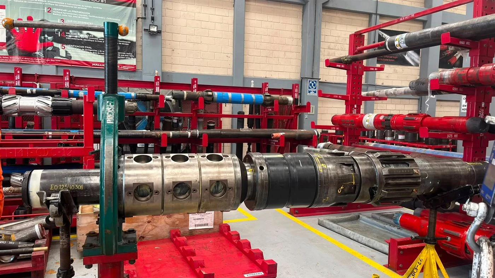
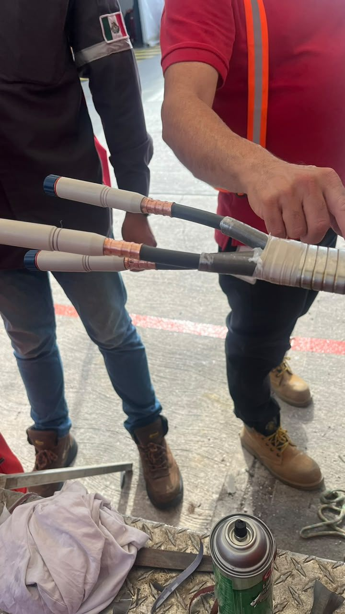
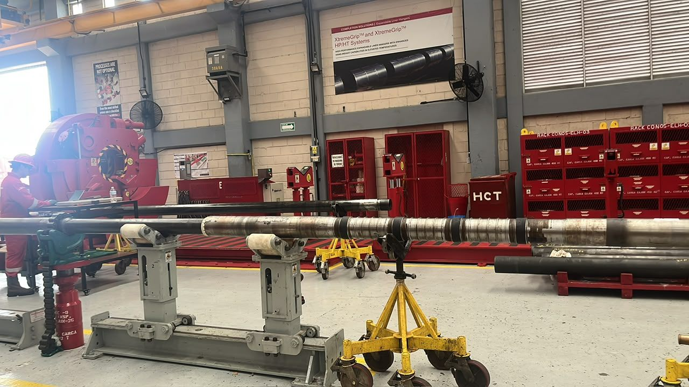
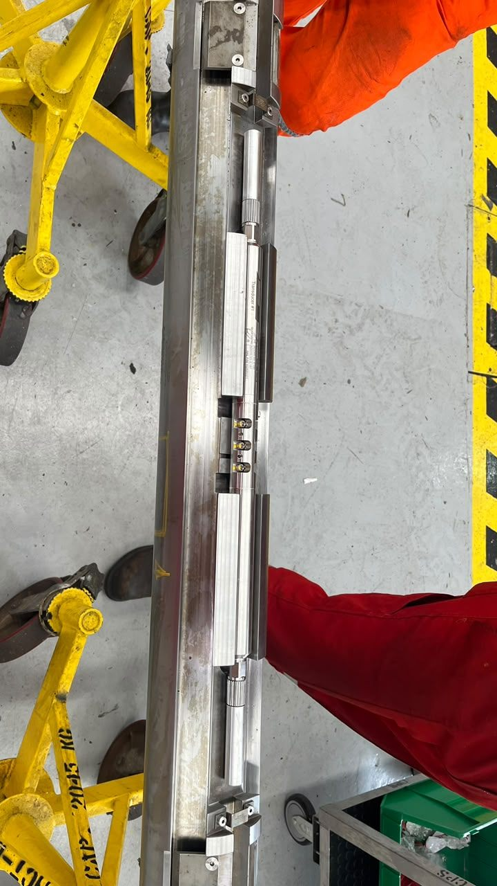
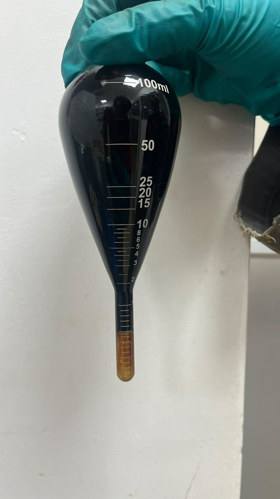
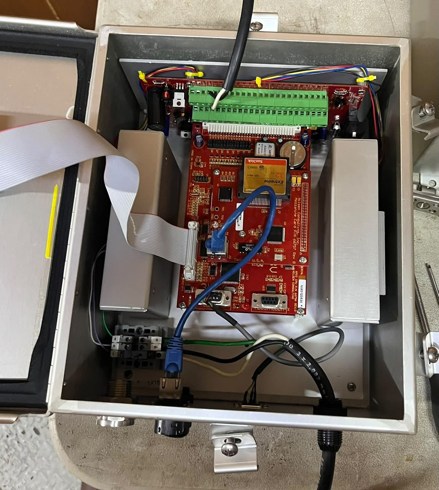
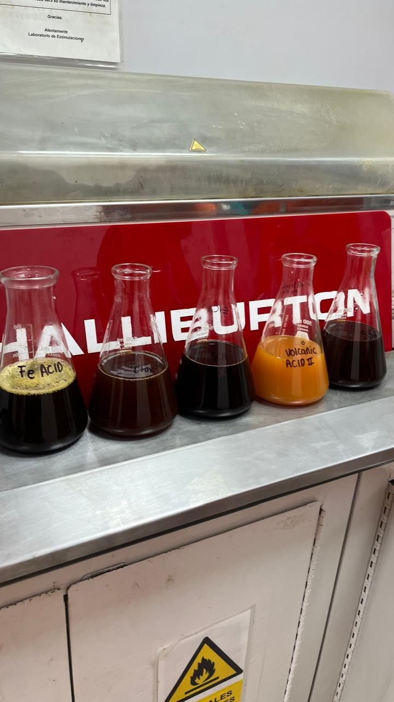
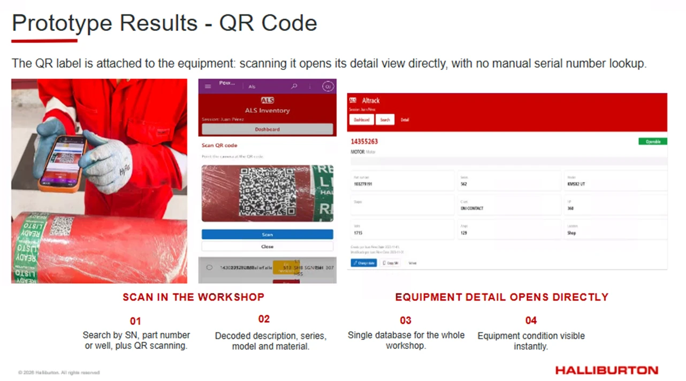

01HCT

Completion Tools
Equipo de terminación de pozo preparado y revisado en taller.
- Empacadores recuperables y HPHT
- Liners y colgadores deformables
- Sartas de limpieza y válvulas TRSV
- Sensores permanentes de P/T
Automatización, coordinación operativa y gestión de datos para la industria del petróleo y gas. Formado en Halliburton (DEEP) y Baker Hughes, en Cd. del Carmen.
Ingeniero en Mecatrónica que une el taller, el laboratorio y los datos. Manejo PLC Siemens y Festo, SAP, MAPS y Power Apps, con experiencia en movilización de personal para LATAM, documentación de herramientas y soporte operativo en pozo.
Rotación por tres líneas de servicio: herramientas de terminación, levantamiento artificial y estimulación de producción.

Equipo de terminación de pozo preparado y revisado en taller.

Pruebas de taller a equipo BEC/ESP antes de su envío a campo.

Control de calidad en laboratorio de estimulación ácida, apuntalantes y surfactantes.








Practicante · Soporte de Operaciones y Personal
Administré bases de datos de personal para operaciones en LATAM y coordiné su movilización a sitios de perforación.
Gestioné datos de herramientas en MAPS, mejorando la integridad de la información y reduciendo discrepancias.
Actualicé datos de Job Center para varios países, mejorando la calidad de los reportes.
Brindé soporte pre y post trabajo en operaciones de pozo y en documentación contractual y de cumplimiento.
Organicé reportes de inspección, fichas técnicas, registros de mantenimiento y bitácoras de trazabilidad.
Con el Service Delivery Coordinator, cargué reportes de condición de herramientas para planear el mantenimiento.
Implementé ajustes operativos que redujeron tiempos de respuesta y mejoraron la eficiencia del equipo.
Ingeniería en Mecatrónica (titulado)
Universidad Autónoma del Carmen · Cd. del Carmen, México
Controla bombas, separadores de gas y protectores por condición y ubicación, con búsqueda por número de serie, edición multiusuario y registro de auditoría de cada cambio. Una etiqueta QR en cada equipo abre su ficha directamente desde el teléfono.


Seguimiento de registros de capacitación, vigencia de certificados y próximos requerimientos. El personal sube sus certificados y monitorea su estatus de cumplimiento.
Robot para recolectar residuos en arena, con visión artificial basada en machine learning que alcanza 90% de precisión en la clasificación de residuos.
Sistema con Arduino y sensores para asignar lugares y detectar vehículos en tiempo real. Coordiné la integración electrónica, mecánica y de software hasta un prototipo funcional.
Semáforo programado en un PLC Festo, con temporizadores para el ciclo verde, amarillo y rojo, y un botón peatonal que solicita el cruce dentro de la lógica de control. Cableado y probado en banco.

Abierto a oportunidades en ingeniería, operaciones y energía.